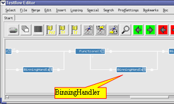

BinningHandler test method for driver sharing
To avoid early binning in a test flow for shared pins, the BinningHandler test method is provided to implement "software binning".
You can place a test suite based on this method instead of a bad bin in the failing branch of each functional test suite in the test flow. If you do so, the BinningHandler test method records hardware and software binning codes.
At the end of the test flow, master binning bins the devices according to the multibin concept.

With the binning handler in place, the failing device will continue to retrieve active drive data. However, result processing is disabled to remove any performance penalty due to this behavior.
Functional changes
- Introduced before SmarTest 6.3.2